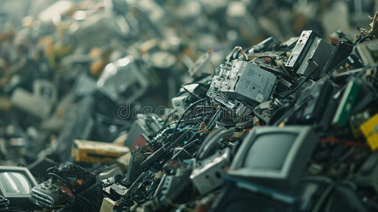

Electronic waste
What is this?
E-waste refers to the discared electronic devices that are no longer in use.
Its is one of the most pressing environmemntal concerns in the world. TO keep up with the fast pace of software development we contiue to upgrade the hardware used thus disposing of old electronics.
On the other hand, this supports technological advancements but on the other and leaves the planet in great grief and turmoil through pollution on land, water and in air.
Forms of electronic waste
There are various forms of electronic waste i.e;
- Large househhold appliances
- ICT devices
- Consumer electronics
- lighting equipment
- Electrical tools
- Old toys and sport equipment
Key facts
E-waste is one of the fastest growing solid waste streams in the world (1).
In 2022, an estimated 62 million tonnes of e-waste were produced globally. Only 22.3% was documented as formally collected and recycled (2).
Lead is a common substance released into the environment when e-waste is recycled, stored or dumped using informal activities, including open burning, (3).
Informal e-waste recycling activities may have several adverse health effects. Children and pregnant women are particularly vulnerable.
ILO and WHO estimate that millions of women and child labourers working in the informal recycling sector globally may be at risk of hazardous e-waste exposures (4,5).
Overview
Every year millions of electrical and electronic devices are discarded as products break or become obsolete and are thrown away. These discarded devices are considered e-waste and can become a threat to health and the environment if they are not disposed of and recycled appropriately.
Common items in e-waste streams include computers, mobile phones, large household appliances, and medical equipment. Millions of tonnes of e-waste are recycled using unsound activities, as well as being stored in homes and warehouses, dumped, and illegally exported. When e-waste is recycling using unsound activities, it can release up to 1000 different chemical substances into the environment, including known neurotoxicants such as lead (3). Pregnant women and children are particularly vulnerable due to their pathways of exposure and developmental status. The International Labour Organization (ILO) estimates that 16.5 million children were working in the industrial sector in 2020, of which waste processing is a subsector (4).
Scope of the problem
Electronic waste (e-waste) is one of the fastest growing solid waste streams in the world (1). Less than a quarter of e-waste produced globally in 2022 was known to be formally recycled; however, e-waste streams contain valuable and finite resources that can be reused if they are recycled appropriately. E-waste has therefore become an important income stream for individuals and some communities. People living in low- and middle-income (LMICs), particularly children, face the most significant risks from e-waste due to lack of appropriate regulations and enforcement, recycling infrastructure and training. Despite international regulations targeting the control of the transport of e-waste from one country to another, its transboundary movement to LMICs continues, frequently illegally. E-waste is considered hazardous waste as it contains toxic materials and can produce toxic chemicals when recycled inappropriately. Many of these toxic materials are known or suspected to cause harm to human health, and several are included in the 10 chemicals of public health concern, including dioxins, lead and mercury. Inferior recycling of e-waste is a threat to public health and safety.
Exposure to e-waste
Electrical and electronic items contain many different toxic substances. Users are unlikely to have contact with these substances while the items are functional. When they become waste, these toxicants can be released into the environment if the devices are managed using environmentally-unsound practices and activities. Many unsound practices have been observed at e-waste sites including:
- scavenging
- dumping on land or in water bodies
- landfilling along with regular waste
- opening burning or heating
- acid baths or acid leaching
- stripping and shredding plastic coatings
- disassembly of equipment.
These activities are considered hazardous to the environment and health as they release toxic pollutants, contaminating the air, soil, dust, and water at recycling sites and in neighbouring communities. Open burning and heating are considered the most hazardous activities due to the toxic fumes created. Once in the environment, these toxic pollutants can travel significant distances from the point of pollution, exposing people in faraway areas to hazardous substances.